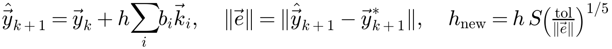
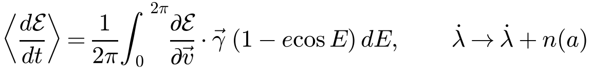
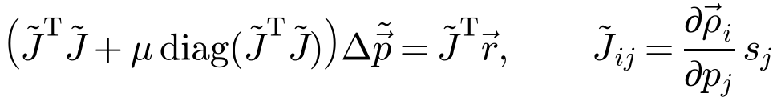
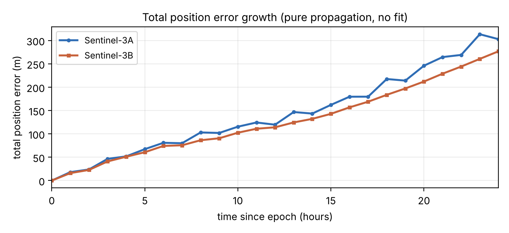

URSC was built to determine and predict long-term LEO trajectories with a fully modular, inspectable, dependency-free codebase, using Orekit as an architectural reference but sharing no code.
Four principles drive the design:
ForceModel; every atmosphere an
Atmosphere; every integrator an ODEIntegrator; every frame realisation a
selectable model. Components are composed, not hard-wired, so a force or a model can be added or
swapped without touching callers..properties scenario file.| Package | Responsibility | Key types |
|---|---|---|
math | Vectors, rotation matrices, constants | Vector3D, RotationMatrix, Constants |
time | Time scales & epochs | AbsoluteDate, TimeScalesFactory, UTCScale |
frames | GCRF/ITRF, IAU-2006/2000B, EOP | FramesFactory, Iau2006, Transform, EopProvider |
bodies | Ephemerides, Earth ellipsoid | CelestialBodyFactory, OneAxisEllipsoid |
orbits | Element sets & conversions | Keplerian/Equinoctial/CartesianOrbit, PVCoordinates |
forces | All perturbations | ForceModel, gravity/*, drag/*, radiation/*, Relativity |
ode | Integrators | DormandPrince54Integrator, ClassicalRungeKutta |
propagation | Propagators, events, sampling | NumericalPropagator, semianalytical/DSSTPropagator |
estimation | Orbit determination | BatchLeastSquares, PositionObservation |
config | Scenario assembly | PropagationConfig, ScenarioLoader |
io | External data | PoeOrbReader, CSV writers, TLE parser |
analysis, app | Decay/compare tools, CLI | DecayPredictor, ModelComparison, Cli + commands |
The whole engine turns on a few small interfaces:
ForceModel — Vector3D acceleration(SpacecraftState). Every
perturbation implements this one method; the propagator simply sums them.Atmosphere — double getDensity(date, rBodyFixed), so the
drag force is agnostic to the density model (exponential / Harris–Priester / NRLMSISE-00).ODEIntegrator — a single adaptive or fixed step; the propagator drives it.SampledPropagator — the common surface (step handlers, events, output type) that
both the numerical and DSST propagators implement, so analysis tools accept either engine
interchangeably.Configuration is assembled with a fluent builder, PropagationConfig, which gathers the
initial state, integrator, force toggles and output type and emits a ready propagator. The same
configuration object is reused by the CLI, the comparison tool, the decay predictor and the estimator.
All forces return an acceleration in the state's inertial frame and are summed by the propagator. Table 2 is the implementation index; the physical derivations and governing equations are given in the companion Physics Report. Constants are listed in the Appendix.
| Model | Class | Algorithm / standard | Data / constants |
|---|---|---|---|
| Central + geopotential | SphericalHarmonicGravity | Cunningham–Gottlieb recursion (M&G §3.2.4) | EGM96 d/o 70, bundled gzip resource |
| Point-mass central | NewtonianAttraction | −μr/r³ | μ = 3.986004418e14 |
| Third body | ThirdBodyAttraction | Direct + indirect term | Sun/Moon analytical series |
| Atmospheric drag | DragForce + Atmosphere | Cannonball, co-rotating vrel | NRLMSISE-00 / HP / exponential |
| Thermosphere | NRLMSISE00Atmosphere | gtd7d (verified port) | SpaceWeatherProvider (F10.7, Ap) |
| Solar radiation pressure | SolarRadiationPressure | Conical umbra/penumbra | P0 = 4.56e-6 N/m² |
| Solid Earth tides | SolidTides | IERS-2010 Step 1 (deg 2,3,+k⁺) | Love numbers, Table 6.3 |
| Ocean tides | OceanTides | IERS-2010 eq 6.15, Doodson args | FES2004, 8 constituents, d/o 4 |
| Relativity | Relativity | Schwarzschild (+opt. Lense–Thirring) | IERS-2010 eq 10.12, β=γ=1 |
| Earth albedo / IR | EarthRadiationPressure | Knocke–Ries (available) | Reflectivity/emissivity rings |
| Empirical accel. | EmpiricalAcceleration | RTN constant/periodic terms | User / estimated |
Drag uses the cannonball model with the relative velocity taken against a co-rotating atmosphere
(vrel = v − ω⊕×r). Density comes
from the pluggable atmosphere; with NRLMSISE-00 the drivers (daily F10.7, 81-day average F10.7a, daily Ap)
are supplied by a SpaceWeatherProvider that is either constant or read from a CelesTrak CSSI
file. The ballistic grouping CDA/m is the natural estimation parameter (§7, §9).
Propagation is performed in GCRF (pseudo-inertial). The GCRF↔ITRF transform has two selectable
realisations: a fast sidereal-only SIMPLE model (GMST rotation, IAU-82 polynomial) and the
default full IAU_2006 model implemented in Iau2006:
Nutation2000BData, ported from the SOFA reference;EOP (UT1−UTC, polar motion) are injected through an EopProvider — either
ConstantEop or a file-backed reader. Time scales (TimeScalesFactory) cover TAI,
TT = TAI + 32.184 s, UTC with the full 1972–2017 leap-second table, GPS, and
UT1. AbsoluteDate stores continuous TAI seconds from J2000, so epoch differences are exact
across leap seconds — a subtle correctness point for long arcs. The IAU-2006 chain reproduces SOFA to
~10−13 rad in the test suite.
The recommended integrator is the adaptive Dormand–Prince 5(4) embedded Runge–Kutta pair (DOPRI5): a seven-stage, first-same-as-last (FSAL) scheme. The fifth-order solution is propagated and the difference against the embedded fourth-order solution drives per-step error control:

(1)with step scaling by a safety factor (0.9), bounded growth/shrink factors [0.2, 5], and absolute/relative tolerances (validation used 10−7/10−9). The step automatically shrinks near perigee and in denser atmosphere and grows where dynamics are smooth. A fixed-step classical RK4 is also provided. Dense (cubic-Hermite) interpolation yields output on an arbitrary user grid without re-integrating.
Events are located by a g-function sign change with bracketing and bisection refinement, supporting apside, node, altitude (re-entry) and eclipse detectors. This is what lets the decay/lifetime tools stop cleanly at a re-entry altitude and lets SRP/eclipse analyses find shadow boundaries.
NumericalPropagator integrates the full osculating Cartesian state (r, v)
under the summed forces using the chosen integrator, with step handlers, dense output and event detection.
It is the high-accuracy workhorse used for the validation and OD below.
For multi-year and lifetime studies, resolving every ~100-minute revolution with Cowell is expensive.
The DSSTPropagator implements a numerically-averaged mean-element method: it propagates
the six mean equinoctial elements (a, ex, ey,
hx, hy, λ) by orbit-averaging the variational equations:

(2)At each large step, the osculating state is built at N points (default 24) around the current
mean orbit; the perturbing acceleration (sum of the same ForceModels minus the two-body
term) is evaluated at each; the element rates ∂E/∂v·γ are
formed by finite difference of the equinoctial elements with respect to velocity (step 10−3
m/s); and these are averaged with the (1−e cos E) weight, with
the mean longitude additionally advancing at the mean motion n(a). The result is mean
elements, stepped in hours-to-a-day — roughly 20× faster than Cowell for long runs, reusing
every force model. Short-period recovery (mean→osculating) is a documented follow-up.
BatchLeastSquares estimates a parameter vector — the initial state
[r, v] and optionally the drag coefficient CD — by fitting the
propagated trajectory to position observations through Gauss–Newton iteration. The design matrix (the
partials of computed position with respect to the parameters) is formed by finite differences, so the
estimator works with any force model and either propagation engine — no analytical variational
equations are required. The scaled normal equations with small Levenberg–Marquardt damping are

(3)where ρi is the residual at observation i,
sj the per-parameter scale (position 1, velocity 10−3,
CD 10−2) that conditions the problem, and μ a tiny damping term. The step
is accepted with step-halving backtracking (up to 6 contractions) and the iteration converges when the
relative RMS improvement falls below 10−4. The linear system is solved by Gaussian
elimination with partial pivoting. Observations are PositionObservations (GCRF, metres),
here sampled from the POEORB precise orbit.
PropagatorFactory
lambda that rebuilds a seeded propagator from a parameter vector, so the same code fits either the Cowell
or DSST engine, with any subset of forces.PoeOrbReader) — parses CCSDS/Earth-Explorer
AUX_POEORB *.EOF precise-orbit files: time-tagged ITRF state vectors plus the
carried UT1−UTC offset. Drives both validate and fit.ScenarioLoader) — .properties files where each
force is an independent toggle with its own parameters; selects the propagator (numerical/dsst),
integrator, orbit, spacecraft, output and re-entry event.Cli) — zero-dependency sub-command dispatcher: propagate,
decay, compare, tle, validate, fit,
with ASCII plots and RTN error reporting in the terminal.The validate command seeds the propagator from the first POEORB state (ITRF→GCRF with
the file's own UT1), integrates forward under the full model with no fitting, and differences the
propagated position against the precise orbit at each epoch, decomposing the error into radial, along-track
and cross-track components. The fit command then runs the batch estimator against the same
arc. Run configuration: mass 1130 kg, area 8 m², CD = 2.2,
CR = 1.3, F10.7/F10.7a/Ap = 220/205/12, gravity 30×30, DP54 tolerances
10−7/10−9.

| Satellite | Span | Total RMS | Total max | Radial (max) | Cross (max) | Along (max) | Wall time |
|---|---|---|---|---|---|---|---|
| Sentinel-3A | 12 h | 81.8 m | 131 m | ~6 m | ~28 m | ~123 m | 0.7 s |
| Sentinel-3A | 24 h | 165.6 m | 315 m | ~10 m | ~28 m | ~313 m | 1.1 s |
| Sentinel-3B | 24 h | 146.2 m | 277 m | ~4 m | ~27 m | ~277 m | 0.6 s |
| Satellite | Estimated | Pre-fit RMS | Post-fit RMS | Improvement | Iters | Est. CD |
|---|---|---|---|---|---|---|
| Sentinel-3A | state (6) | 38.43 m | 4.81 m | 8.0× | 2 | — |
| Sentinel-3A | state + CD | 38.43 m | 4.49 m | 8.6× | 2 | 5.26 |
| Sentinel-3B | state (6) | 41.18 m | 5.94 m | 6.9× | 2 | — |
| Sentinel-3B | state + CD | 41.18 m | 5.16 m | 8.0× | 2 | −3.20 |
mvn test runs 37 unit tests (all passing), checking physics and numerics against published
values, not just internal consistency:
| Area | Current state | Impact |
|---|---|---|
| Space weather | Constant F10.7/Ap in validation (file-backed provider exists) | Dominant along-track error |
| Spacecraft geometry | Cannonball (fixed area) for drag & SRP | Ballistic/SRP mismodelling |
| CD estimation | Single scalar; unobservable on short arcs | Needs long arc / empirical accel |
| Sun/Moon ephemeris | Low-precision analytical series (~0.1°) | Small (periodic) radial/cross |
| EOP | UT1 from file; polar motion zero in validation | Metre-level frame error |
| Estimation output | No formal covariance; position-only observations | No uncertainty bounds |
| Jacobian | Finite-difference (re-propagates per parameter) | Slower OD; no analytic STM |
| TLE seeding | Approximate (no SGP4 recovery) | Coarse TLE-based starts |
| DSST output | Mean elements (no short-period recovery yet) | Not osculating-accurate |
Prioritised by accuracy impact per unit effort. P1 highest.
SW-All.csv) into validate/fit for the exact arc dates — the
single biggest expected along-track improvement.EmpiricalAcceleration) over multi-day arcs, resolving the CD
ill-conditioning of §9.2.Several roadmap items above are now implemented and validated (see the companion Model Comparison report for the full side-by-side numbers):
validate/fit
accept --sw-file SW-All.csv (file-backed CssiSpaceWeatherProvider with the
constant indices as fallback). Note: fetching the live CelesTrak file was blocked by the
execution environment's network policy, so the real-indices run is pending the host being
allow-listed or the file supplied; the plumbing is verified.| Constant | Symbol | Value | Unit |
|---|---|---|---|
| Earth gravitational parameter | μ | 3.986004418×1014 | m³ s−2 |
| EGM96 GM | GM | 3.986004415×1014 | m³ s−2 |
| Earth equatorial radius | R⊕ | 6 378 136.3 | m |
| Earth flattening (WGS84) | f | 1/298.257223563 | — |
| Earth rotation rate | ω⊕ | 7.292115×10−5 | rad s−1 |
| Sun GM | GM⊙ | 1.32712440018×1020 | m³ s−2 |
| Moon GM | GM☽ | 4.9028×1012 | m³ s−2 |
| Speed of light | c | 299 792 458 | m s−1 |
| Astronomical unit | AU | 1.495978707×1011 | m |
| Solar radiation pressure @1 AU | P0 | 4.56×10−6 | N m−2 |
| TT − TAI | — | 32.184 | s |
| Command | Purpose |
|---|---|
propagate <scenario.properties> | Propagate a scenario; ASCII plots / CSV |
decay <scenario.properties> | Orbital-lifetime / re-entry prediction (Monte-Carlo option) |
compare <scenario> --vary k=v1,v2 | Side-by-side model comparison |
validate <poeorb.eof> | Propagate from a precise state; RTN error vs truth |
fit <poeorb.eof> [--estimate-cd] | Batch least-squares OD against a precise orbit |
tle <tle-file> | Parse / propagate a TLE (approximate) |